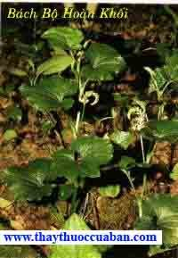

Tên khác:
Tên thường gọi: Vị thuốc Bách bồ còn gọi Đẹt ác, Dây ba mươi,Bà Phụ Thảo (Nhật Hoa TửBản Thảo), Bách Nãi, Dã Thiên Môn Đông (Bản Thảo Cương Mục), Vương Phú, Thấu Dược, Bà Tế, Bách Điều Căn, Bà Luật Hương (Hòa Hán Dược Khảo), Man Mách Bộ, Bách Bộ Thảo, Cửu Trùng Căn, Cửu Thập Cửu Điều Căn (Trung Quốc Dược Học Đại Từ Điển),Dây Ba Mươi, Đẹt Ác, Bẳn Sam, Síp (Thái), (Pê) Chầu Chàng (H’mông), Robat Tơhai, Hiungui (Giarai), Sam Sip lạc [Tày] (Dược Liệu Việt Nam).

Tên khoa học: Stemona tuberosa Lour. Họtemonaceae
Họ khoa học: Bách Bộ (Stemonaceae).
Cây bách bộ
(Mô tả, hình ảnh cây bách bộ, thu hái, chế biến, thành phần hoá học, tác dụng dược lý ....)
Mô tả:
Cây bách bộ là một cây thuốc quý. Cây dạng dây leo thân nhỏ nhẵn, quấn, có thể dài 10cm, lá mọc đối có khi thuôn dài thân nổi rõ trên mặt lá, 10 - 12 gân phụ chạy dọc từ cuống lá đến ngọn lá, cụm hoa mọc ở kẽ lá, có cuống dài 2-4cm, gồm 1-2 hoa to màu vàng hoặc màu đỏ. Bao hoa gồm 4 phận, 4 nhụy giống nhau, chỉ nhị ngắn. Bầu hình nón, quả nặng có 4 hạt, ra hoa vào mùa hè. Rễ chùm gần đến 30 củ (nên mới gọi là Dây Ba Mươi), có khi nhiều hơn nữa. Mọc hoang dại khắp nơi, đặc biệt là những vùng đồng núi.
Thu hái và sơ chế:
Dùng củ nhiều năm để dùng thuốc, củ càng lâu năm càng to càng dài, thu hoặc vào đầu đông hàng năm, hoặc vào lúc đầu xuân, chồi cây chưa hoạt động, trước khi thu hoạch, cắt bỏ dây thân, nhổ bỏ cây choai, đào toàn bộ củ lên, rửa sạch phơi khô.
Phần dùng làm thuốc:
Dùng rễ củ, rễ thường cong queo dài từ 5-25cm đường kính từ 0,5-1,5cm. Đầu trên hơi phình to, đầu dưới thuôn nhỏ dần.
Mô tả dược liệu:

Rễ củ Bách bộ khô hình con thoi dài khoảng 6-12cm, thô khoảng 0,5-1cm, phần dưới phồng to đỉnh nhỏ dần, có xếp vết nhăn teo có rãnh dọc sâu bên ngoài màu vàng trắng hoặc sám vàng. Chất cứng giòn chắc, ít ngọt,đắng nhiều, mùi thơm ngát, vỏ ngoài đỏ hay nâu sẫm là tốt (Dược Tài Học).
Bào chế:

+Đào lấy củ gìa rửa sạch cắt bỏ rễ 2 đầu, đem đồ vừa chín, hoặc nhúng nước sôi, củ nhỏ để nguyên, củ lớn bổ đôi, phơi nắng hoặc tẩm rượu, sấy khô (Bản Thảo Cương Mục).
+Rửa sạch, ủ mềm rút lõi, xắt mỏng phơi khô, dùng sống. Tẩm mật một đêm rồi sao vàng [dùng chín] (Phương Pháp Bào Chế Đông Dược).
Phân biệt:
(1) Ngoài cây Bách bộ lá mọc đối nói trên, ở Việt Nam còn có cây Bách bộ đá hay Bách bộ không quấn (Stemona saxorum Gagnep): Thân thảo không quấn, dài 20 - 25cm, có khi phân nhánh, có khi không. Lá dưới biến thành vảy dài 5-7mm, phía trên có 2-3 lá hình trứng hay hình tim, đầu nhọn, gân cuống. Ra hoa vào tháng 4. Cây thường gặp ở các hốc đá có mùn tại các rừng miền núi phía Bắc nước ta.
(2) Ở Trung Quốc và Nhật Bản thường dùng cây Bách bộ (Stemona japonica (B1) Miq) là một loại cây nhỏ sống nhiều năm. Toàn cây nhẵn. Củ rễ chất thịt, hình chùy đều, mọc thành chùm gồm nhiều củ, Cây cao 1,72 - 3m, leo bò trên cây khác, thân có rãnh dọc, lá đơn mọc thành 2 -4 vòng lá nhọn hoặc hơi nhọn, lá không co răng cưa, hơi uống hình làn sóng, phía cuống lá hình tròn hay gần như hình tiết, gân lá có 5 - 9, cuống lá hình sợi dây dài khoảng 1,5 - 3cm. Hoa mọc trên cuống dài hình sợi dây, mọc sen bên trên cuống lá, mỗi cuống lá có một hoa, hoa màu xanh nhạt, có 4 cánh, cánh hoa xẻ thành hai, hình trứng hay hình kim, đuôi nhọn, phần cuống hơi rộng, sau khi hoa nở cánh hoa xòe ra cụp xuống cong ra ngoài, 4 nhị đực màu tím, gần giống hình mũi tên, ngắn, có hai bao phấn, cọng hình sợi dây, bầu hình trứng không có vòi. Quả bế đôi quả hình trứng rộng và dẹt, vỏ nhẵn bóng không có lông, lúc còn non màu xanh nhạt, lúc chín thì vỏ nứt ra, trong có nhiều hạt. Hạt hình bầu dục dài nâu tím sẫm. Vỏ có nhiều nếp dọc, một đầu có chất màng màu trắng vàng.
(3) Ngoài các loài đã mô tả ở trên, còn có mấy loài khác dưới đây đều được dùng làm thuốc:
a) Cây bách bộ hoa nhỏ (Stemona pariflora Wight) có ở đảo Hải Nam, vỏ cách, hoặc mọc thành vòng quanh mắt, đậy mỗi mặt có 34 lá, hình kim phình, chỗ cuống hình tiết. Hoa rất nhỏ, bao hoa hình chiết đục, có 4 cánh hoa, nứt 2 thùy, hình kim phình giữa. bầu hoa hình trứng, trong có 3 hạt dựng đứng.
b) Cây Bách bộ lá hẹp (Stemona agula Sm) là loại cây thân thảo, leo bò, sống lâu năm. Thân dài 3060cm. Củ rễ chất thịt, mọc chùm, hình dài hay khác. Lá mọc đối hoặc chùm 3 - 5 lá vòng quanh mắc dây, hình kim phình thường dài thường co 3 gân, mọc từ sát cuống ra, cuống lá thường nhỏ. Hoặc mọc riêng lẻ ở nách lá, phần gốc cuống nối liên với cuống lá, hoa màu trắng bên ngoài màu đỏ hay hồng, có 4 nhụy đực, 1 nhụy cái. Bầu hình trứng kiểu quả bầu nhỏ. Hạt màu nâu đen.
c) Bách bộ thân đứng (Stemona sesslifolia Miq. Franch.) Cây đứng không phân cành, cao 60 - 65cm. Củ chất thịt, hình chùy đều, mọc thành chùm có nhiều củ. Mỗi mặt thân cây có 3 - 5 lá mọc xung quanh, hình trứng đến hình bầu dục dài, đuôi lá nhọn ngắn, gốc lá nhỏ dần, cuống lá ngắn, có 3 - 5 gân lá. Hoa mọc ở nách lá, hoa màu xanh nhạt pha màu tím, gồm 4 cánh. Bầu hoa hình trứng không có vòi.
d) Ngoài các cây đã giới thiệu ở trên ra, riêng tỉnh tứ Xuyên còn có dùng một loài Thổ Bách bộ thuộc giống Thiên môn đông họ Liliaceae tức là Thiên Môn đông răng dê (Asparagus filicinus Ham) còn có tên khác là Thiên chùy tả, là củ ngắn nhỏ, dài độ 3cm, cũng gọi là Xuyên bách bộ, chỉ sản xuất và tiêu thụ trong tỉnh Tứ Xuyên (Danh Từ Dược Vị Đông Y).
Bảo quản:
Ít sâu mọt nhưng dễ hút ẩm, mốc, nên sau khi phơi hay sấy khô, nên cất vào chỗ khô tránh ẩm
Thành Phần Hóa Học:
.Trong loại Radix Stemonae Japonicae có Stemonine, Stemonidine, Isostemonidine, Protostemonine, Paipunine, Sinostemonine (Tài Nguyên Cây Thuốc Việt Nam).
.Trong loại Radix Stemonae Sessilifoliae có: Stemonine, Isostemonidine, Protostemonine, Tubersostemonine, Hodorine, Sessilistemonine (Tài Nguyên Cây Thuốc Việt Nam).
.Trong loại Radix Stemonae Tuberosae có: Stemonine, Tubersostemonine, Isotubersostemonine, Stemine, Hypotubersostemonine, Oxotubersostemonine (Tài Nguyên Cây Thuốc Việt Nam).
+Rễ Bách bộ chứa Tuberostemonin, Stnin, Oxotuberostemonin. Ngoài ra còn 1 số Alcaloid khác chưa rõ cấu trúc: Stmonin C22H33O4N4N, điểm chảy 1620, Isostemonin C22H33O4N, điểm chảy 2122160, Isotuberostemonin C22H33O4N, điểm chảy 1231250, Hypotuberostemonin C19H2123O3N, Stemotuberin, điểm chảy 77820, Setemonidin C19H31O5N, Paipunin C24H34O4N. Rễ còn chứa Glucid 2,3%, Lipid 0,84%, Protid 9,25% và 1 số Acid hữu cơ (Acid Citric, Malic, Oxalic, Succinic, Acetic...] (Tài Nguyên Cây Thuốc Việt Nam).
Tác dụng dược lý:
+Tác dụng kháng vi trùng: Radix Stemonae in vitro có tác dụng kháng khuẩn đối với nhiều loại khuẩn gây bệnh gồm: Streptococus Pneumoniae, bHemolytic Streptococus, Neisseria Meningitidis và Staphylococus aureus (Trung Dược Học).
+ Tác dụng diệt ký sinh trùng: dịch cồn hoặc nước ngâm kiệt củaBách Bộ có tác dụng diệt ký sinh trùng như chấy rận, bọ chét, ấu trùng ruồi, muỗi, rệp... (Trung Dược Học).
+Tác động lên hệ hô hấp: nước sắc Bách bộ không tỏ ra có tác dụng giảm ho do chích Iod nơi mèo. Bách bộ có tác dụng làm giảm hưng phấn trung khu hô hấp của động vật, làm giảm ho do ức chế phản xạ ho. Đối với kháng Histamin gây co giật, Bách bộ có tác dụng giống như Aminophylline nhưng hòa hoãn và kéo dài hơn (Trung Dược Học).
+Dùng trong bệnh nhiễm: Theo dõi hơn 100 bệnh nhân dùng nước sắc Bách bộ, cho thấy có 85% có hiệu quả giảm ho (Trung Dược Học).
Tác dụng trị ho: Stemonin có tác dụng làm giảm tính hưng phấn của trung tâm hô hấp của động vật, ức chế phản xạ ho, do đó có tác dụng trị ho. Bách bộ đã được thí nghiệm chữa lao hạch có kết quả tốt (Tài Nguyên Cây Thuốc Việt Nam).
+ Tác dụng trị giun và diệt côn trùng: ngâm giun trong dung dịch 0,15% Stemonin, giun sẽ tê liệt sau 15 phút. Nếu kịp thời lấy giun ra khỏi dung dịch, giun sẽ hồi phục lại. Tiêm dung dịch Stemonin sulfat (3mg) vào ếch nặng 25g, có thể làm cho ếch tê bại, sau 12 giờ thì bình phục. Dùng rượu thuốc Bách bộ 1/10 trong rượu 700, ngâm hoặc phun vào con rận, rận sẽ chết sau một phút. Nếu ngâm rệp, con vật sẽ chết nhanh hơn (Tài Nguyên Cây Thuốc Việt Nam).
+ Tác dụng kháng khuẩn: Bách bộ có tác dụng diệt vi khuẩn ở ruột gìa và kháng vi khuẩn của bệnh lỵ, phó thương hàn (Tài Nguyên Cây Thuốc Việt Nam).
Nước sắc vỏ rễ Bách bộ có những tác dụng dược lý sau:
. Nước sắc 1050% rễ Bách bộ có tác dụng làm liệt giun (liệt mềm) sau thời gian từ 820 giờ. Giun đã bị liệt do tác dụng của thuốc không hồi phục lại sau khi được rửa sạch thuốc. Bách bộ có tác dụng làm tan rã chất Kitin bao bọc chung quanh giun (Tài Nguyên Cây Thuốc Việt Nam).
. Với liều vừa phải, Bách bộ không ảnh hưởng đến hoạt động co bóp tim, huyết áp, hoạt động co bóp của ruột và tử cung và không gây độc đối với súc vật thí nghiệm (Tài Nguyên Cây Thuốc Việt Nam).
. Dung dịch Alcaloid toàn phần chiết từ rễ cũng như từ lá và thân Bách bộ đều có tác dụng long đờm rõ rệt trước chuột nhắt trắng và làm liệt cơ giun đũa ở lợn. Do đó có thể sử dụng cả rễ, lá và thân cây Bách bộ làm thuốc trị ho và trị giun (Tài Nguyên Cây Thuốc Việt Nam).
Vị thuốc bách bộ
(Công dụng, Tính vị, quy kinh, liều dùng .... )
Tính vị:
+Vị ngọt đắng, tính hơi ôn
Quy kinh
+ Vào kinh Phế
Tác dụng:
+Nhuận phế, chỉ khái, sát trùng
Chủ trị:
Trị ho do hư lao. Thường dùng trong trị lao phổi, khí quản viêm mạn tính, ho gà, giun đũa, giun kim (Lâm Sàng Thường Dụng Trung Dược Thủ Sách).
Liều dùng:
Dùng từ 4 - 20g, ngứa ngoài da, dùng ngoài tùy ý.
Cách dùng:
Dùng sống: trị ghẻ lở, giun sán.
Dùng chín: trị ho hàn, ho lao
+ Ngộ độc: Khi ăn nhiều rễ cũ sẽ gây tê liệt trung khu hô hấp, có thể chết. Kinh nghiệm dân gian dùng nước gừng và uống giấm để giải cứu.
Ứng dụng lâm sàng của vị thuốc bách bộ:
+Trị ho dữ dội:
Dùng rễ Bách bộ, Gừng sống, gĩa lấy nước, 2 vị bằng nhau, sắc uống 2 chén (Trữu Hậu phương).
+Trị nuốt phải đồng tiền:
Dùng 160g rễ Bách bộ, 640g rượu,ngâm một đêm. Uống mỗi lần 1 tô,ngày 3 lần (Ngoại Đài Bí Yếu phương).
+Trị ho lâu năm:
Bách bộ (rễ) 20 cân, gĩa vắt nước, sắc lại cho dẻo quánh. Mỗilần uống 1 muỗng canh, ngày 3 lần (Thiên Kim phương)
+Trị ho dữ dội:
Dùng rễ Bách bộ ngâm rượu, ngày uống 1 chén, ngày 3 lần (Trương Văn Trọng).
+Trị ho nhiều:
Dùng Bách bộ (cả dây lẫn rễ), gĩa vắt lấy nước cốt, trộn với mật ong, 2 thứ bằng nhau. Nấu thành cao,ngậm nước nuốt từ từ (Tục Thập Toàn phương).
Trị tự nhiên ho không dứt:
Bách bộ (củ rễ), hơ trên lửa nướng cho khô, mỗi lần lấy nước một ít ngậm nuốt nước (Phổ Tế phương).
Trị trẻ nhỏ ho do hàn:
Bách bộ sao, Ma hoàng khử mắt, mỗi thứ 30g,tán bột. Hạnh nhân (bỏ vỏ, bỏ đầu nhọn) sao, bỏ vào nước thật sôi, vớt ra, nghiền bột,cho mật vào nặn viên bằng hạt Bồ kết. Mỗi lần uống 23 viên với nước nóng (Tiểu Nhi Dược Chứng Trực Quyết).
Trị phù, vàng da cả người:
Bách bộ (củ) mới đào về, rửa sạch, gĩa nát. Đắp một miếng lên rốn, lấy nửa tô xôi gĩa mềm dẻo đắp trên miếng Bách bộ vừa rồi, xong lấy khăn bịt lại 12 ngày sau thấy trong ruột có hôi mùi rượu thì tiểu được, hết phù (Dương Thị Gia Tàng Phương).
Trị các loại côn trùng vào lỗ tai:
Bách bộ (sao) nghiền nát, trộn vớidầu mè bôi trong lỗ tai (Thánh Tế Tổng Lục).
Trị áo quần có rận, rệp, bọ chét, chí:
Dùng Bách bộ, Tần giao nghiền nhỏ cho vào lồng tre xông khói lên, có thể nấu nước giặt (Kinh Nghiệm Phương).
Trị giun kim:
Bách bộ tươi, sắc kẹo thụt vào hậu môn trong một tuần (Lâm Sàng Thường Dụng Trung Dược Thủ Sách).
Trị giun đũa:
Bách bộ 12g, sắc uống vào buổi sáng lúc đói, liên tục 5 ngày, sau đó dùng thuốc xổ mỗi sáng (Lâm Sàng Thường Dụng Trung Dược Thủ Sách).
Trị các chứng ho do hư chứng:
Bách bộ, Tang căn bạch bì, Thiên môn đông,Mạch môn đông,Bối mẫu, Tỳ bà diệp, Ngũ vị tử, Tử uyển, sắc uống (Lâm Sàng Thường Dụng Trung Dược Thủ Sách).
Trị ho do cảm mạo, ngứa họng, đờm ít:
Bách bộ 16g,Kinh giới 12g,Bạch tiền 12g,Cát cánh 12g,Sắc uống (Trung Dược Học).
Trị lao phổi có hang:
Bách bộ 20g,Hoàng cầm 10g,Đơn bì 10g,Đào nhân 10g, Sắc đặc còn 60ml, uống ngày 1 thang, liên tục 2 - 3 tháng. Đã trị 93 cas, kết quả tốt (Đặng Tường VinhTrung Quốc Phòng Lao Tạp Chí 1966, 1:27).
Trị lao phổi:
Bách bộ 12gsắc uống với bột Bạch cập 12g (Sổ Tay LâmSàng Trung Dược).
Trị lao phổi:
Viên Bách bộ trị 153 cas lao phổi: dùng gà con, bỏ ruột và đầu, chân, theo tỉ lệ 1 cân gà - 1 cân thuốc. Cho gà và nước vừa đủ nấu trong 4 giờ, đổ nước gà ra, cho thêm nước khác nấu trong 45 lần, mỗi lần 2 giờ. Các lần sắc nước, trộn đều cho thuốc vào khuấy đều (cứ 1 cân thuốc cần 480g nước hầm gà). Làm thành viên nhỏ, mỗi ngày uống 2 lần, mỗi lần 10g. Một liệu trình là 20-30 ngày. Nếu có kết quả, tiếp tục uống thêm 23 thang rồi sau đó uống thêm 23 thangđể củng cố kết quả. Đa số bệnh nhân đều lên cân, triệu chứng lâm sàng được cải thiện (Trần Tường VinhTrung Y Tạp Chí 1959, 3:39).
Trị ho do lao phổi, do phế nhiệt:
Bách bộ 640g,Sa sâm 640g,đổ 10 cân nước sắc bỏ bã, trộn với 640gmật ong, nấu nhỏ lửa cho thành cao. Ngày uống 2 lần, mỗi lần 8ml (Sổ Tay LâmSàng Trung Dược).
+Trị ho, suyễn, khí quản viêm mãn tính:
Bách bộ 20g,Miên hoa căn 5 cái, Ma hoàng 8g, Đại toán 1 củ, sắc uống (Sổ Tay LâmSàng Trung Dược).
Trị ho gà:
Bách bộ 1015g, sắc uống (Sổ Tay LâmSàng Trung Dược).
Trị ho gà:
Bách bộ 1220g,sắc uống với đường cát (Sổ Tay LâmSàng Trung Dược).
+Trị ho gà:
Bách bộ 12g, Bạch tiền 12g,Cam thảo 4g,Đại toán 2 tép, sắc uống với đường, mỗi ngày chia làm 3 lần uống liên tục 3 - 4 ngày (Sổ Tay LâmSàng Trung Dược).
Trị các chứng ho:
Bách bộ 20g, sắc 2 lần được 60ml, chia làm 3 lần uống trong ngày (Trịnh Tường Quang,Thiểm Tây Trung Y Tạp Chí 1986, 10: 439).
Trị giun kim:
Bách bộ, Binh lang, Sử quân tử, các vị bằng nhau tán bột, trộn dầu thụt quanh hậu môn (Những Cây Thuốc Vị Thuốc Việt Nam).
Trị giun kim:
Bách bộ 40g, đổ nước sắc còn 10-20ml thụt vào hậu môn trước khi ngủ, liên tục 23 đêm. Hoặc dùng Bách bộ 20g, Tử thảo 20g, Vaselin 100g, tán bột, trộn với Thanh cao bôi quanh hậu môn (Sổ Tay LâmSàng Trung Dược).
Trị giun kim:
Bách bộ 40g tươi, sắc với 200ml nước còn 30ml, thụt giữ 20 phút, liên tục 1012 ngày (Dược Liệu Việt Nam).
Trị chí, rận, bọ chét:
Bách bộ 120g, ngâm với 1 lít Cồn, sau 24 giờ sức ở ngoài da (Sổ Tay LâmSàng Trung Dược).
Trị mần ngứa ngoài da, viêm da mề đay, muỗi cắn, vẩy nến:
Bách bộ xắt ra, dùng mặt sắt đó xát vào nơi đau, ngày nhiều lần (Sổ Tay LâmSàng Trung Dược).
Trị mề đay:
Bách bộ 29g, Bằng sa, Hùng hoàng mỗi thứ 8g, sắc nước, rửa (Sổ Tay LâmSàng Trung Dược).
Trị mũi đỏ (tửu tra tỵ):
Ngâm Bách bộ trong cồn 950 trong 57 ngày, chế thành 50% Tinctura Bách bộ, bôi ngoài ngày 23 lần. 1 tháng là 1 liệu trình, trị 13 cas có kết quả 92% (Đình Thụy XuyênTrung Y Tạp Chí 1981, 4:273).
Diệt ruồi, bọ, giòi...:
. Nước sắc Bách bộ, cho thêm ít đường, ruồi ăn chết đến 60%.
. Dung dịch 1/20 giết chết 100% bọ gậy.
. Rắc bột Bách bộ vào hố phân, giết chết 100% giòi.
. Đốt Bách bộ rồi xông khói, diệt được ruồi, muỗi, bọ chó.
(Những Cây Thuốc Và Vị Thuốc Việt Nam).
Tham khảo
So sánh
+Bách bộ cũng là loại có tác dụng như Thiên môn cũng chữa ho và có tác dụng sát trùng, nhưng Thiên môn khí lạnh, Bách bộ khí ấm hơn, vì vậy,cách chữa cũng khác nhau (Bách Hợp).
+Bách bộ tuy hơi ôn những nhuận mà không táo, còn có thể khai tiết, giáng khí, trị ho thì không thuốc nào bằng, nhất là ho lâu ngày (Bản Thảo Chính Nghĩa).
+Dùng củ Bách bộ xắt mỏng, sao khô cho vào túi vải ngâm trong vỏ rượu lấy uống dần để trị các chứng ho gọi là Bách Bộ Tửu” (Trung Quốc Dược Học Đại Từ Điển).
Kiêng kỵ:
+ Tỳ hư, tiêu chảy: không dùng (Trung Dược Học).
+ Vị này dễ làm thương tổn tới Vị, có tính hoạt trường,vì vậy người Tỳ hư, tiêu chảy: cấm dùng (Lâm Sàng Thường Dụng Trung Dược Thủ Sách).
Nơi mua bán vị thuốc BÁCH BỘ đạt chất lượng ở đâu?
Trước thực trạng thuốc đông dược kém chất lượng, nguồn gốc không rõ ràng,... xuất hiện tràn lan trên thị trường, làm ảnh hưởng tới hiệu quả điều trị cũng như ảnh hưởng tới sức khỏe của bệnh nhân. Việc lựa chọn những địa chỉ uy tín để mua thuốc đông dược là rất quan trọng và cần thiết. Vậy khách hàng có thể mua vị thuốc BÁCH BỘ ở đâu?
BÁCH BỘ là vị thuốc nam quý, được sử dụng rộng rãi trong YHCT. Hiện tại hầu hết các cửa hàng thuốc đông dược, phòng khám đông y, phòng chẩn trị YHCT... đều có bán vị thuốc này. Tuy nhiên người mua nên chọn những địa chỉ có uy tín, đảm bảo chất lượng, có giấy phép hoạt động để mua được vị thuốc đạt chất lượng.
Với mong muốn bệnh nhân được sử dụng những loại dược liệu đúng, chất lượng tốt, phòng khám Đông y Nguyễn Hữu Toàn không chỉ là đia chỉ khám chữa bệnh tin cậy, uy tín chất lượng mà còn cung cấp cho khách hàng những vị thuốc đông y (thuốc nam, thuốc bắc) đúng, chuẩn, đạt chuẩn chất lượng. Các vị thuốc có trong tiêu chuẩn Dược điển Việt Nam đều được nghành y tế kiểm nghiệm đạt chất lượng tiêu chuẩn.
Vị thuốc BÁCH BỘ được bán tại Phòng khám là thuốc đã được bào chế theo Tiêu chuẩn NHT.
Giá bán vị thuốc BÁCH BỘ tại Phòng khám Đông y Nguyễn Hữu Toàn: 145.000vnd/1kg
Tùy theo thời điểm giá bán có thể thay đổi.
+ Khách hàng có thể mua trực tiếp tại địa chỉ phòng khám: Cơ sở 1: Số 481 lô 22 Lê Hồng Phong, Phường Gia Viên, Thành phố Hải Phòng
+ Mua trực tuyến: Thuốc được chuyển qua đường bưu điện. Khi nhận được thuốc khách hàng thanh toán tiền COD.
Tag: cay bach bo, vi thuoc bach bo, cong dung bach bo, Hinh anh cay bach bo, Tac dung bach bo, Thuoc nam
Thaythuoccuaban.com Tổng hợp
*************************